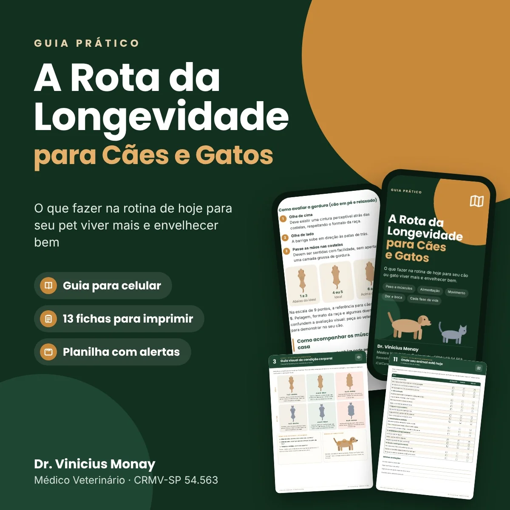
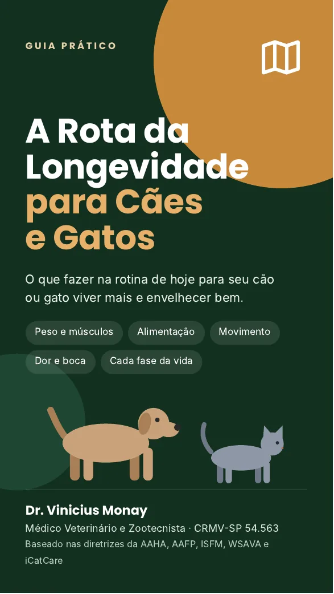
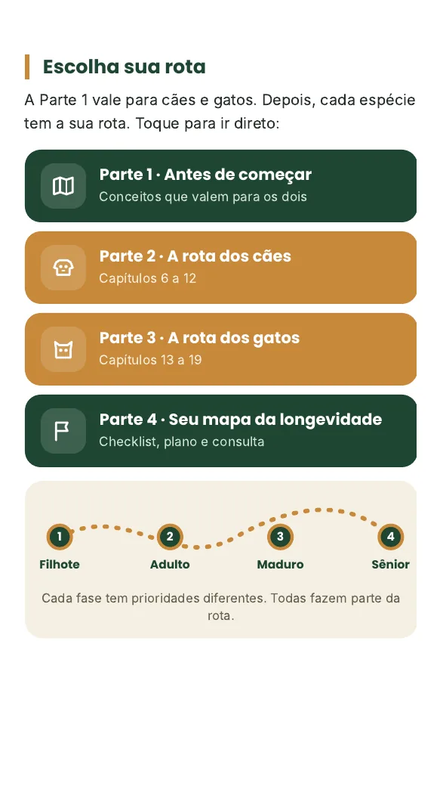
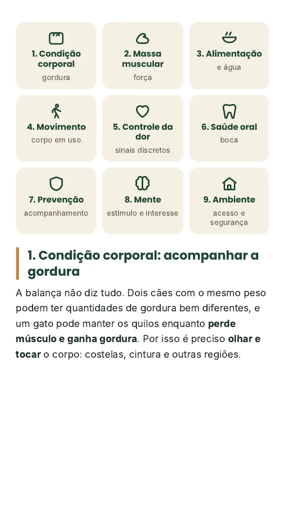
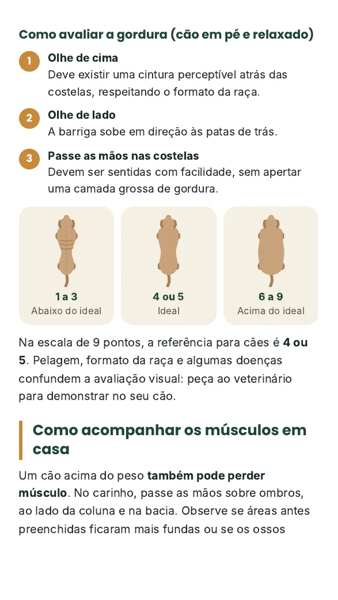
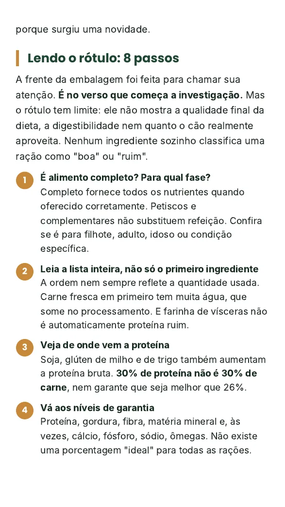
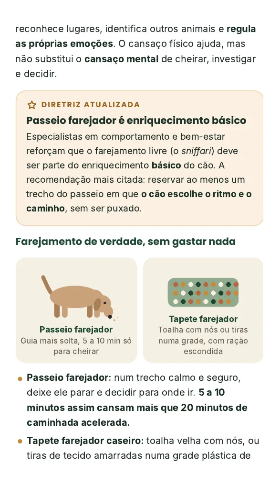
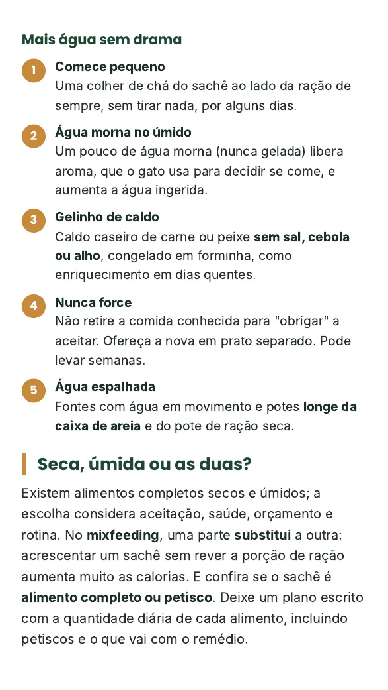
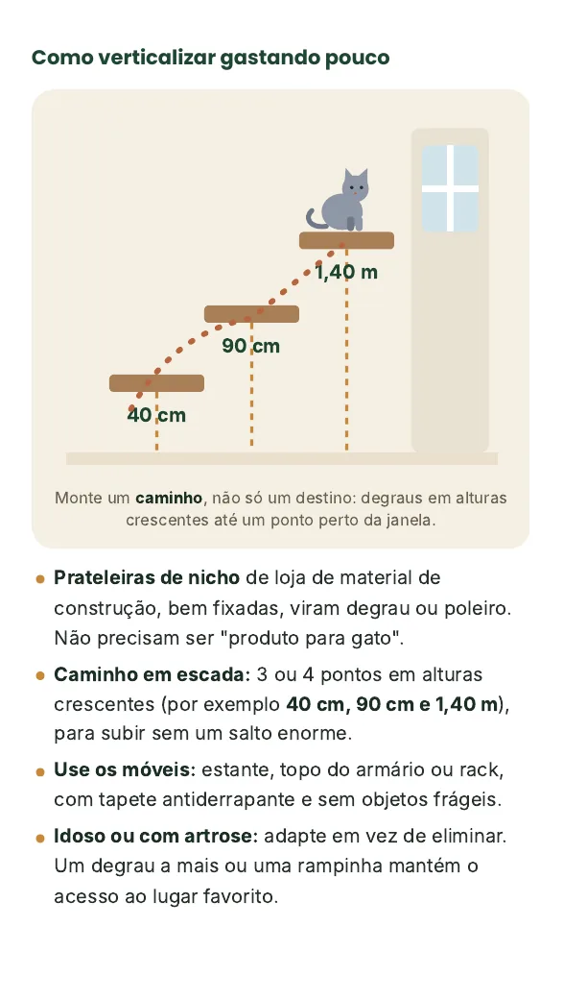
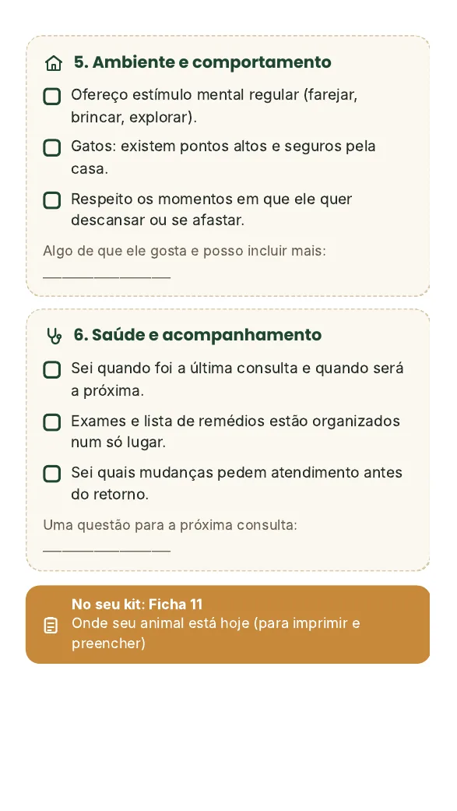

Longevidade é peso, músculo, comida, movimento, boca, a dor que ninguém vê e as pequenas mudanças que viram "coisa da idade". A Rota da Longevidade mostra o que fazer na rotina de hoje para seu cão ou gato viver mais e envelhecer bem.

A gente convive todo dia, se adapta junto e nem percebe. Até que alguém pergunta há quanto tempo ele está assim.
Antes pulava no sofá. Agora espera no chão até alguém pegar no colo.
Preguiça ou dor?Continua comendo bem, mas a balança mostra meio quilo a menos que no ano passado.
É só meio quilo ou 10% do peso dele?O peso é o mesmo de sempre, mas as pernas de trás parecem mais finas.
Se a balança não mudou, está tudo bem?Os torrões de xixi na caixa de areia estão maiores e ele visita mais o pote de água.
Calor ou sinal de alerta?"Ele está ficando velho" encerra a conversa cedo demais. Quase sempre existe algo a investigar, ajustar ou facilitar.
Cinco crenças que aparecem toda semana no consultório. Toque na sua resposta.
A alimentação importa muito, e ela faz parte de um conjunto. Um animal pode comer bem e continuar com dor, estar no peso e perder músculo. O guia mostra como cada pilar puxa o outro.
Depois dos conceitos que valem para os dois, cada espécie ganha a sua rota, com as prioridades de cada fase da vida.
Não precisa ler tudo de uma vez nem seguir a ordem. O sumário é clicável e leva direto à rota do seu pet.









Deslize para ver mais telas →
Cada capítulo indica a ficha certa. Imprima, preencha e leve à consulta: o veterinário enxerga em minutos o que você observou em meses.
Planilha inteligente
As mesmas ferramentas em Excel e Google Sheets, com idade e fase da vida calculadas sozinhas e alertas coloridos quando o peso ou a rotina mudam.
Guia + Kit de Ferramentas + Planilha
Leia o guia, use as fichas e, se não fizer sentido para você, peça o reembolso pela Kiwify em até 7 dias. Sem precisar explicar o motivo.
Serve. A primeira parte vale para os dois, e depois cada espécie tem a sua rota, com o que muda no corpo, na alimentação, na casa e nos cuidados de cada fase.
Vale, e muito. Boa parte do que decide como ele vai envelhecer acontece antes da velhice: o peso ao longo dos anos, a boca, o movimento. O guia tem orientações para filhote, adulto, maduro e idoso.
Também serve. O guia mostra o que observar, como adaptar a casa e a rotina e o que levar à consulta. Diagnóstico e tratamento continuam sendo do seu veterinário.
Não, de propósito. Alimentação e suplementação precisam ser individualizadas. O guia ensina a avaliar o que seu pet come, ler rótulos e fazer as perguntas certas, sem receitas prontas nem doses.
Não. Ele ajuda você a perceber mudanças cedo, organizar os registros e aproveitar melhor cada consulta.
O pagamento é processado pela Kiwify. Assim que for confirmado, você recebe por e-mail o acesso ao guia para celular, ao kit de fichas e à planilha.
Serve. O conteúdo vale para todos e as fichas podem ser impressas quantas vezes você precisar.
Você tem 7 dias de garantia. Peça o reembolso direto pela Kiwify, sem precisar explicar o motivo.
Você não precisa mudar tudo de uma vez. Precisa saber por onde começar.